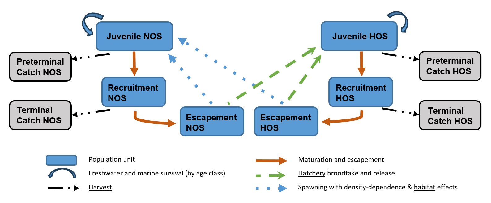
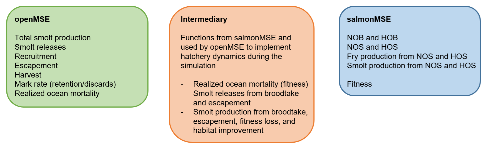

This article documents the implementation of a semelparous salmon operating model in openMSE and is intended for readers familiar with the internal structure of the MSEtool package, e.g., developers and advanced users.
multiMSE
salmonMSE takes advantage of the functionality of the multiMSE function in
MSEtool. multiMSE is intended for multi-population,
multi-fleet operationg models (class MOM) where the
“population” unit can be envisioned to be any combination of a
sex-specific single species model, multi-species model, or multi-stock
model. Relevant features include:
Two-sex models where the spawning output to predict recruitment for a population is a linear combination of the spawning output from the set of populations in the model (using
MOM@SexPars$SSBfrom)Hermaphroditism in the sex dynamics such that either females or males switch sexes. Mechanistically, the abundance moves from one population to another at the beginning of the time step based on a specified age schedule (using
MOM@SexPars$Herm)Inter-population and intra-population dynamics where the biological parameter for one population is updated by the abundance or biomass of a set through a custom written function (“MICE” modeling using
MOM@Rel)Multi-fleet model that can be used to allocate catches among populations and fleets
Salmon dynamics can be represented mechanistically using the above functionalities:
Multi-population models are used to model salmon life stages. For each salmon population, three populations are modeled to represent the immature, mature (recruitment), and escapement life stage. Natural and hatchery fish are also separately modeled, thus, there are 6 population units are needed if there is a hatchery for a single population and 3 population units if there is no hatchery. The escapement population is used to predict the production of the next cohort of juveniles. The
MOM@SexPars$SSBfromfeature is used to predict the juvenile population abundance at age 1 from the spawning from the escapement pouplation unit.Fish progress through the populations, i.e., life stages, based on maturity status. Movement of fish from the recruitment to the escapement life stage occurs in the year after maturity. While the cohorts will advance to the next age class, the life cycle ‘catches up’ such that the generation time remains true to the real dynamics. More about this in the next section. The openMSE feature intended for hermaphroditism is utilized here.
Total natural smolt production (immature natural origin fish) is predicted by the spawning output of the natural and hatchery spawners (two population units) by a function written in salmonMSE and passed to openMSE as a MICE Rel (see
salmonMSE:::makeRel_smolt()andsalmonMSE:::smolt_func()). This function also implements the fitness dynamics the reduces productivity based on the ratio of hatchery spawners and the ratio of natural broodtake.This same function also implements the hatchery dynamics by removing natural and hatchery broodtake from the respective escapement and specifies the hatchery smolt releases as immature hatchery origin fish.
This function also updates the number of hatchery spawners if there are external strays (annual fixed number) or from strays leaving the system.
Another custom function specifies the reduction in marine survival due to fitness loss (see
salmonMSE:::makeRel_SAR()andsalmonMSE:::SAR_fitness()).A multi-fleet model specifies the harvest rates for the pre-terminal and terminal fisheries. Retention is specified within openMSE from the mark rate if mark-selective fishing is utilized.

Representation of the life cycle stages (blue) modeled in openMSE.
Salmon considerations
openMSE models fish populations through an age-structured array. As such, it can accommodate mixed brood-year returns. There are some additional complexities in the age structure that needs to be adjusted in order to model salmon.
In openMSE, the life stage resulting from juvenile density-dependent survival occurs in the time step when spawning occurs. However, smolt production occurs in the year after spawning. Therefore, we advance the age structure of the escapement one extra year in openMSE in order to ensure smolt production occurs in the correct time step. In the reporting, i.e., converting openMSE output back to salmon specific output, the escapement, abundance of spawners, broodtake, and the egg production are adjusted back to the appropriate biological year.
In the absence of a hatchery, the escapement is the number of spawners. In such a scenario, the spawning output and the smolt production can be calculated entirely within openMSE. With a hatchery, the escapement is subject to broodtake and removal of hatchery fish, and entry of strays from the spawning grounds. openMSE sees none of the hatchery dynamics. Instead, a MICE function created by salmonMSE will read in the natural and hatchery escapement from openMSE, calculate the broodtake, removal of hatchery fish from spawning grounds, calculate fitness, adjust the stock-recruit parameters, apply fitness to the egg and smolt production, and return the natural smolt production as a “recruitment deviation” to openMSE. This is a multiplicative term that adjusts the natural smolt production that would have been created if there were no hatchery (note ‘recruitment’ is used to refer to the life stage after density-dependent survival, as commonly used in a marine fisheries context, and not the salmon return). This function will also calculate the hatchery smolt releases as an absolute number for openMSE.
The hermaphroditism feature in openMSE, used by salmonMSE to assign maturity, occurs at the beginning of the time step. At the same time, fishing mortality occurs over the course of the time step simultaneously with natural mortality. However, salmon fisheries typically operate seasonally. The pre-terminal fishery occurs early in the year, followed by maturation and the subsequent terminal fishery later in the year. In other words, fish that mature within a given year are vulnerable to both pre-terminal and terminal fisheries. To solve the order of operations problem, openMSE uses two seasonal time steps to model a full calendar year. The pre-terminal fishery only operates in the first half of the year (odd time steps), maturation happens at the beginning of the second half of the year (even time steps), and the terminal fishery operates in the second half of the year. Ocean mortality occurs on the immature component during the second half of the year. All escapement, broodtake, spawning, and smolt production operations occur at the beginning of the following year (odd time steps, see bullet 1). No current front-end requires knowledge of the seasonal time steps, all output is reported on an annual basis.

Summary of the state variables stored in either openMSE or salmonMSE. The intermediary section consists of functions to calculate state variables pertaining to hatchery and habitat management levers.
Age-structured representation
The following figure illustrates the age structure of a salmon that matures at age 3. In the matrix, the abundance of age zero and age 1 represent the abundance of egg and smolts, respectively. At age 2, the abundance may represent juvenile fish in the marine life stage (although it may occur over the course of ages 1 and 2) that is vulnerable to the pre-terminal fishery. With maturity at age 3, the abundance at the beginning of the time step can be the return that is vulnerable to the terminal fishery. Later in the year, the escapement and the number of spawners is also calculated.

Age-structured representation of a salmon life cycle where all fish mature at age 3. The colors represent three generations of fish.
Various constraints in openMSE prevent implementation of this figure in the model. First, there aren’t enough state variables within a single time step to calculate the escapement and implement the hatchery broodtake between the return and the spawning. Second, the density-dependent survival must occur within the same time step as the spawning. As a result, we must advance the age class with an additional placeholder age class after maturity into the following year that spawning actually occurs. However, we can then calculate the necessary hatchery and spawning dynamics, including egg production, in salmonMSE and merely pass the smolt production back to openMSE. The result is that the age structure ‘catches up’ with the generational life cycle, as shown below.
Additionally, two seasonal time steps per calendar year are needed to model maturation of a cohort in between the timing of the pre-terminal and terminal fishery. As a result, for immature salmon, vulnerability to the pre-terminal seasonal fishery occurs in the first half of the year and ocean mortality occurs in the second half of the year. For salmon that mature, vulnerability to the terminal seasonal fishery occurs in the second half of the year. The component of the cohort that matures does not experience ocean mortality during the last year of life (semelparous life history).

Salmon age structure as implemented in openMSE. Missing state variables are stored in a data frame in salmonMSE during the simulation.